ДЕЙВ КУПЕР
От 18 лет
У меня отношение к комиксу как таковому двоякое: с одной стороны, это сам по себе удивительный жанр. Вернее, даже не жанр — отдельная самостоятельная ветвь искусства, сочетающая литературу, кино и чистую графику. Женщины в трико, опять же. Монстры. Завидую тем, кто в струе. Вот люди посещают Комик кон, например (там, в журнале, еще фотографии с Armory show).
С другой стороны, большая часть того, что происходит в этом сияющем волшебном мире, навевает на меня глубокую скуку. Проблема как раз в том, что комикс в массе остается все-таки именно жанром, и заправляют там по-прежнему те же монстры и женщины в трико.
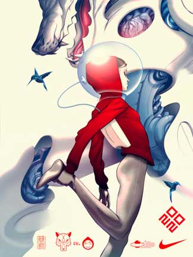
James Jean уже был здесь, но не жалко. Тоже, кстати, для Найка.
Летом я обошел и перерыл все (все) комиксные магазины Нью-Йорка (и все большие книжные на предмет комиксов), а позже выкачал из сети почти всё из вот этого списка, и по-прежнему вижу как-то совсем мало того, что хочется а, собственно читать и б, бесконечно разглядывать, как высокого класса иллюстрацию. На век моей колонки, впрочем, хватит. Стало быть, по порядку.
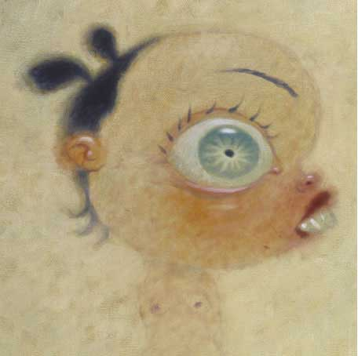
Выдающийся рисовальщик, замечательный рассказчик. Рисовал фоны для Футурамы. Барабанил в какой-то там группе. Сделал сколько-то детских книжек (вполне приличных)
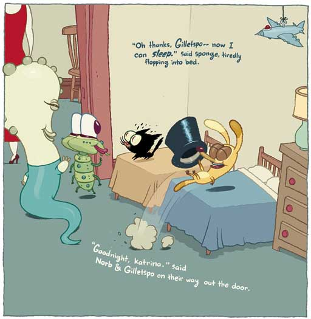
и 4 «взрослых» «графических новеллы» (какую-то часть можно посмотреть здесь).
Можно рассуждать о том, кто оказал на Купера влияние, но большого смысла в этом нет. Это очень, очень специфичный художник (тут нельзя не упомянуть Роберта Крамба, разумеется,
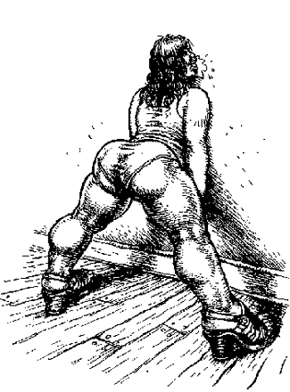
но тот, со своим пристрастием к большим теткам, по сравнению с Купером просто пионер).
Первый же романец, Suckle, о сексуальных похождениях некого сосунка, содержит, кроме прочего, очень достоверное графическое изображение оргазма.
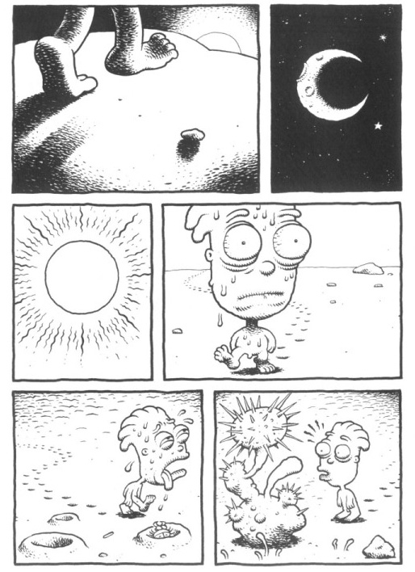
Тема сексуальная проходит, что называется, красной нитью сквозь творчество Купера; проще сказать, это человек больной на всю голову, о чем сам не упустит случая напомнить. В этом, впрочем, нет нужды: каждый булыжник у него буквально сочится от возбуждения, каждый бытовой прибор немножко вибрирует, у каждого куста эрекция (предметы у него вообще живут своей жизнью).
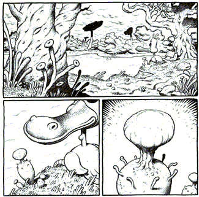
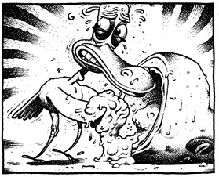
Что говорить про одушевленных тварей. Вот гриборобот (комиксист, кстати) домогается утенка
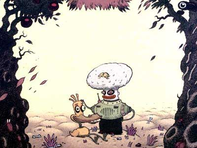
(кончается плохо).
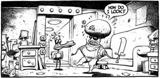
Вот женщины (все как одна лесбиянки, разумеется) вступают в заговор с инопланетянками против мужчин (которых заставляют для продолжения рода бесконечно онанировать).
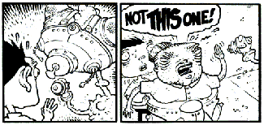
Звучит жутенько, но специфический юмор (на уровне, опять же, самых мелких деталей) и графика сама по себе того стоят. Как в том анекдоте, «любим мы его не только за это». К вопросу о том, пристало ли художнику душевное здоровье — очевидно, пристало, как любому человеку, которому приходиться встречаться и работать с другими людьми — но если художнику вдобавок удается приручить душевное нездоровье, тут держись.
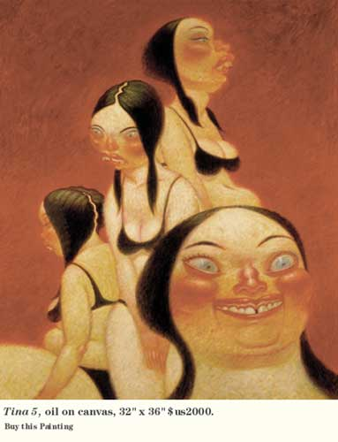
В этом, и любом другом, наверное, смысле вершина его творчества — роман «Ripple» («Рябь», здесь — волны, которые можно разглядеть, если смотреть порно на замедленной скорости), печальная история любви художника к уродливому и злому подростку. Тут, впрочем, почти ни с кем из одолевших этот роман, у меня нет солидарности по поводу того, о чем, собственно, речь — что в известном смысле признак большой литературы. Выдающийся и также вполне больной режиссер Кроненберг в предисловии к «Ряби» ставит ее на одну полку с «Лолитой» Набокова.
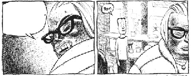
Последнее время Купер совсем, кажется, забросил комикс и подался в «Современное искусство», где, говорят, в короткие сроки стал (заслуженно) одним из самых дорогих живописцев и главным на планете певцом целлюлита.
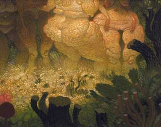
(Здесь можно в подробностях рассмотреть технологический процесс). На данный момент у него вышло два альбома живописи: «Underbelly»(«Лобок») и Overbite («Неправильный прикус»). Нечеловеческая красота.
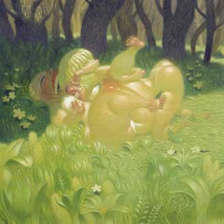